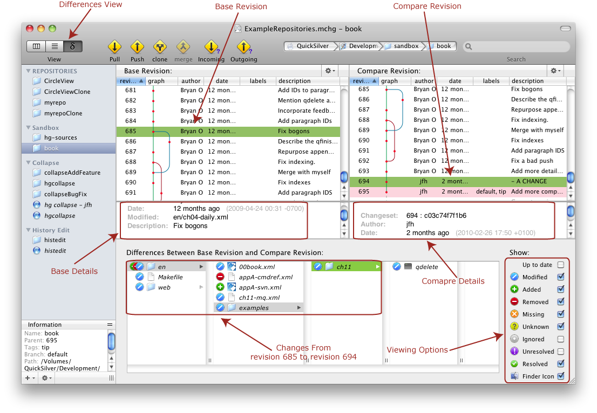

You can switch the view of the document to the Differences View through the View menu. A typical Differences view might be:

After selecting the base revision and the compare revision, the changes between the revisions are represented in virtual files listed in the browser part of the view. You can then interact with these files to see the changes in the chosen files, see which changes have been added and which have been removed, etc.